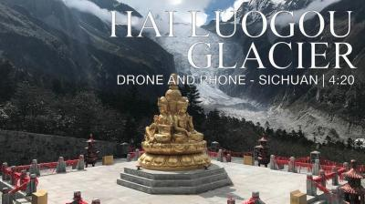

- 首页
- 时政
- 资讯
- 财经
- 生活
- 图片
- 视频
- 专栏
- 双语
- 双语
- 漫画
走进中国新年
对于中国人来说，春节可以说是一年中最为重要的节庆日。每到春节，辛劳工作一年的人们将回到自己的家乡，与家人们团聚在一起。贴窗花、吃年夜饭、走亲戚等等这些春节的传统习俗，随着时代变迁，也一直被传承和创新。
中国日报的英籍记者查理，将与一对在北京生活的中美夫妇来共同感受春节的节日氛围，并向他们学习如何包饺子。
必看
拥有3000年的历史以及沿水而建的悠久文化，无锡的城市名片不仅仅是远近闻名的锡帮菜。 从惠山泥人到船菜，无锡的传统文化可谓独树一帜。
2018.04.20

艾问·傅盛：如何在巨头林立的夹缝中生存？

2018.04.13
艾问·何小鹏：小鹏汽车如何弯道超车?
对话世界 / CEO
2018.04.20
艾问·傅盛：如何在巨头林立的夹缝中生存？
2018.04.13
艾问·何小鹏：小鹏汽车如何弯道超车？
2018.03.30
艾问·余凯：为何选择给机器人造“脑子”？
香港大视野
- 沉香树——香港因它得名，它却濒临灭绝
- 旗袍的诱惑
- 舌尖上的香港
- 大屿山凤凰径五、六段
- 大屿山凤凰径三、四段
活力中国

2017.10.12
境外媒体眼中的江苏

2017.07.25
海螺沟冰川徒步
2017.07.18
走进莫西
别叫我老外

- 乔吉姆的甜品王国
- 歪果仁严选
- 中国的冰雪情结
- 咏春小子
- 北京节奏激发我灵感
微纪录片
2017.12.29
盘点2017：走进新时代

2017.12.29
北京2018，让美好继续

2017.10.13
变革中的中国：熊猫故乡走向世界
最新视频

2019.06.27
中国 - 非洲经贸博览会

2019.03.04
中国经济2019年走向如何？财经大咖有话说
2018.12.07
正能量青年邓伦手语祝福祖国

2018.11.21
新时代·新平台·新机遇”—“一带一路”大型网络主题活动

2018.11.21
新时代·幸福美丽新边疆

2018.11.15
瑞士大使
2018.11.12
蔡徐坤致敬祖国

2018.11.09
完美世界CEO萧泓：内容创新和技术升级是互联网文创行业的核心推动力
我觉得原来互联网技术上其实一直都有突破，随着硬件技术的发展，传统的胶片放映现在大多数都变成了数字放映，这种变化其实是跟数字技术的发展有很大的关系。

2018.11.07
无人驾驶？人工智能？看外国小哥与乌镇的第五约！

2018.10.23
视频为你揭开珠港澳大桥的神秘面纱